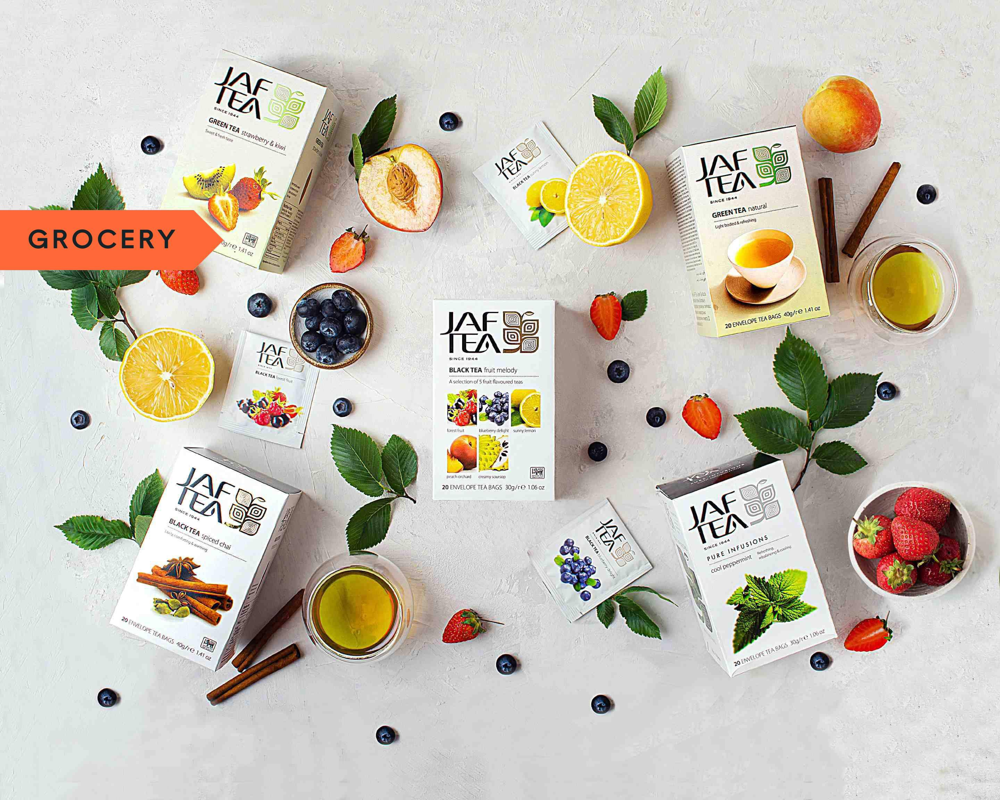

We are world leading tea provider.We provide Ceylon tea refers to tea produced in the highlands of Sri Lanka. formerly known as Ceylon. Like other types of tea, it's made from the dried and processed leaves of the tea plant, Camellia sinensis. ... The tea's notes of citrus and full-bodied taste are due to the unique environmental conditions in which it's grown.
products/Services - We navigate you to world best tea providers in sri lanka and also help to select best tea for our valuble tea love customers.
Address - No 91/10, Ragama Road, Kadawatha, Sri lanka.
Contact No - (94) 11-2696554 / (94) 77-9432212
Why Ceylon tea is the best?
Ceylon teas contain higher levels of potassium when compared with tea grown in other regions.Potassium is extremely important for the health of your body, especially your heart as it relaxes your veins and arteries. This reduces your blood pressure and reduces the strain on your heart.
Not only the above reason people choose ceylone tea
Magical quality
Taste
Improves cognitive function
Story of Ceylone Tea.
Sri Lankan tea (known for generations as Ceylon Tea) carries behind it a heritage and success story like no other. The story of Ceylon tea begins over two hundred years ago, when the country was still a British colony. In 1824 a tea plant was brought to Ceylon by the British from China and was planted in the Royal Botanical Gardens in Peradeniya for non-commercial purposes. Further experimental planting of tea had begun in 1839 with tea plants brought from Assam and Calcutta through the East India Company. Read more
Top 3 best Selling Tea types in Sri Lanka.

Black Tea
Sri Lanka satisfy over 11% of the global demand for tea and is one of the largest exporters of handpicked orthodox tea to the global market. Despite Sri Lanka's adoption of other varieties of Ceylon Black Tea continues to be country's speciality.
Infusion Tea
An infusion of Ceylon Tea and fruits, herbs and spices indigenous to Sri Lanka, Flavoured Ceylon Tea is found in many forms, flavours, and blends across the world. Since the beginning of tea drinking in the 3rd Century AD, various blends and types of tea had been mixed with herbs, spices and fruits to enhance the flavour and aroma of tea.
Green Tea
The Ceylon green tea industry, though young, is growing rapidly as its products attract a following among the tea-drinking nations of the world. Currently, the main export markets for green Ceylon Tea are the Middle East and the countries of the former Soviet Union, though sales are also growing in Europe, North America and East Asia. In Sri Lanka, too, a taste for green tea is rapidly spreading.